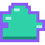
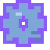
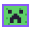
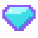
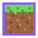

The rest of your toolkitВсё для твоей сборки
From “what if” to “let’s play”.От «а что, если» до «погнали».
Find content, get the right Java, and look after your instances — without a folder full of separate tools.
Находи контент, подбирай Java и управляй экземплярами — без папки с отдельными утилитами на каждый случай.

Pick a pack. Make it yours.Найди сборку. Добавь своё.
Mods, modpacks and resource packs from Modrinth and CurseForge, plus FTB modpacks. Manage installed mods and modpack updates in the launcher.
Моды, модпаки и ресурспаки с Modrinth и CurseForge, а ещё сборки FTB. Управляй установленными модами и обновлениями модпаков в лаунчере.

The right foundationНужная основа
Fabric, Quilt, Forge, NeoForge, or LabyMod 4 on supported Minecraft versions. Automatic Java selection and download, with per-instance settings when you need them.
Fabric, Quilt, Forge, NeoForge или LabyMod 4 на поддерживаемых версиях Minecraft. Автовыбор и загрузка Java, а при необходимости — настройки для отдельного экземпляра.

A second look at your modsЕщё один взгляд на моды
RatScan checks mod files for suspicious code patterns. Compatibility warnings help spot a wrong Minecraft version, loader or missing dependency.
RatScan проверяет файлы модов на подозрительные шаблоны кода. Предупреждения о совместимости помогают заметить неподходящую версию, загрузчик или недостающую зависимость.
Static scanning is not a safety guarantee: it can miss threats and flag harmless code.
Статическая проверка не гарантирует безопасность: возможны пропуски угроз и ложные срабатывания.

Give packs another lifeВторая жизнь ресурспаков
packconv converts resource packs between supported versions and can repair broken images and JSON. Converted and repaired packs are saved as new copies; the original stays.
packconv переводит ресурспаки между поддерживаемыми версиями и может исправить повреждённые изображения и JSON. Результат сохраняется отдельной копией, оригинал остаётся.

More than a Play buttonНе только кнопка «Играть»
Worlds, datapacks, screenshots and servers live alongside your instance. Join a server from the launcher, track playtime, or share a crash log via mclo.gs.
Миры, датапаки, скриншоты и серверы — рядом с экземпляром. Заходи на сервер из лаунчера, следи за временем игры или отправляй лог вылета через mclo.gs.
Your account. Your setup.Твой аккаунт. Твой сетап.
Sign in with Microsoft or ely.by, or choose an offline nickname. Keep separate instances, organize them into groups, and export a setup to take it with you.
Войди через Microsoft или ely.by либо выбери офлайн-ник. Разделяй экземпляры, собирай их в группы и экспортируй сборку, чтобы забрать её с собой.